23 site(s)
Which life stages are findings at this site. A validated stage predicts recruit-years the model did not see, better than spawner abundance alone. Curves for the other stages are arithmetic, not findings.
- spawning year (lag 3): not validated – CV gain over stock -0.01, adjusted p 1.000
- age-0 year (lag 2): not validated – CV gain over stock -0.01, adjusted p 1.000
- age-1 year (lag 1): not validated – CV gain over stock -0.00, adjusted p 1.000
Recruitment is log(recruits / spawners) with a 3-year recruit lag,
against the BAdults node of the null
(flow-naive) IPM posterior. Using the flow-informed fit would put flow
on both sides of the regression.
| Item | Value |
|---|---|
| recruit-years used (every stage) | 32 |
| flow years | 46 (1980-2025) |
| flow modes kept (K) | 4 |
| floor per mode | 4.35% |
| flow variation the modes carry | 71.7% |
| IPM-selected flow lag | not available |
| year-to-year carry-over of flow | 0.35 |
| shares its hydrograph with | Blackfoot.Johnsrud |
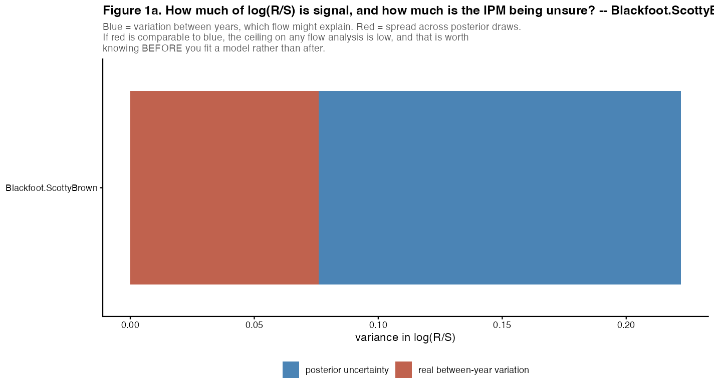
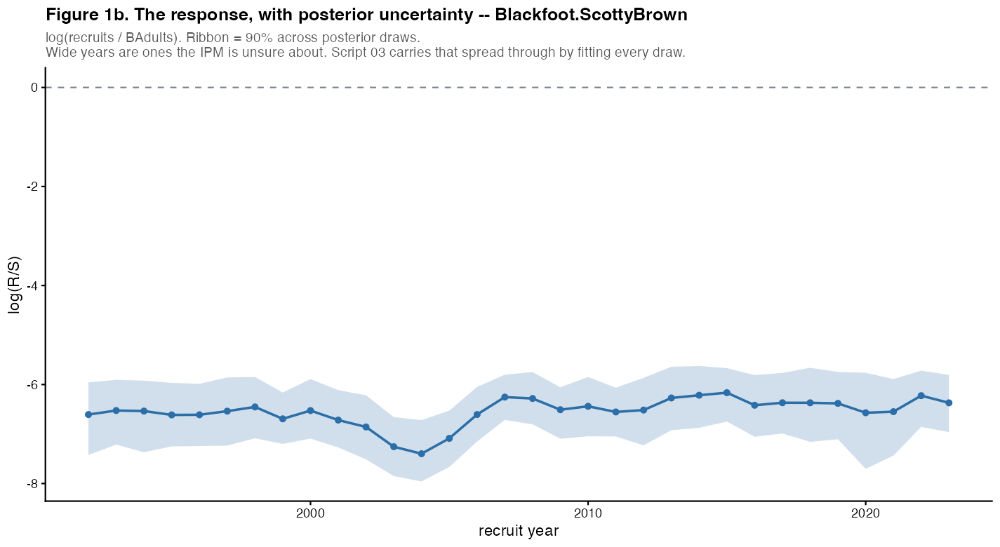
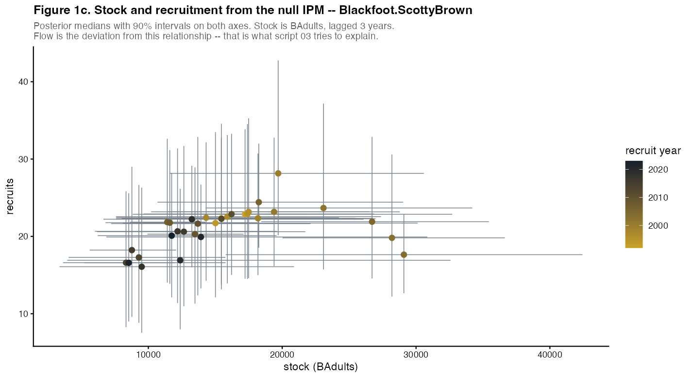
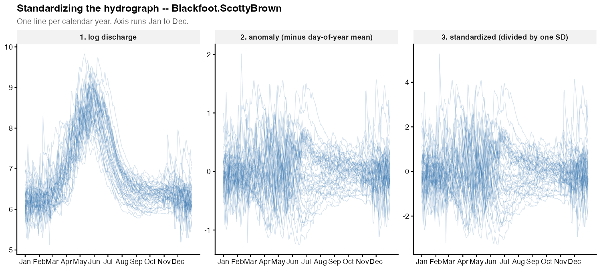
Flow is standardized in three steps, in this order: logs, because discharge is multiplicative; minus each day’s mean across years, so a positive value means wetter than that date usually is; then divided by one global standard deviation, so a wobble in a stable week is not made to count as much as a doubling in June.
The handful of shapes in which this river’s years differ from each other, found from flow alone, before any fish data are used. Each is drawn as the hydrograph of a year 2 SD high (blue) or low (red) on that mode. The same modes are used for every life stage on this page, so “mode 2 matters in the age-0 year but not the spawning year” is a statement about one thing.
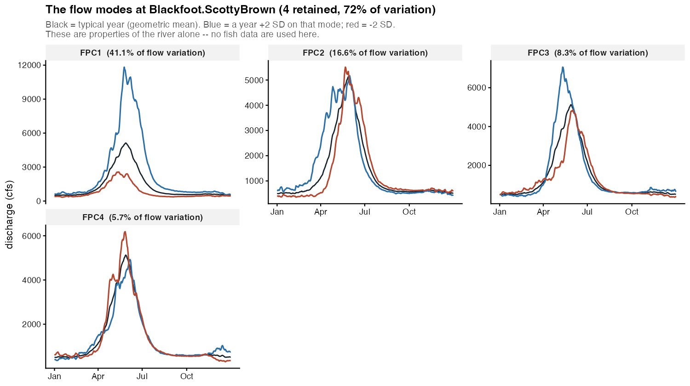
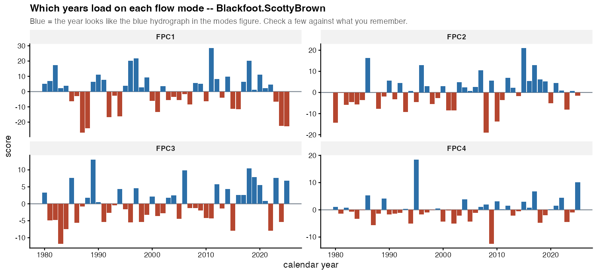
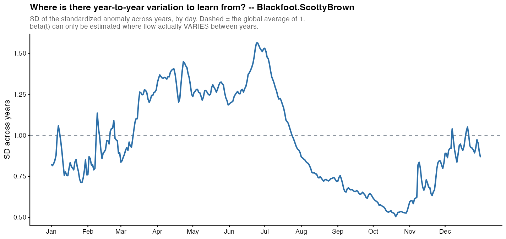
The last figure is the limit on everything below it: beta(t) can only be learned on days when flow differs between years. Where that line sits well under 1 – autumn and winter on most regulated rivers – a flat curve means no information, not no effect.
beta(t) is a weight for every day: the change in log(recruits / spawners) when that day is one standard deviation wetter than usual. It is estimated separately for three hydrograph years of the same cohort – the year its parents spawned, its age-0 year and its age-1 year – and laid end to end, so incubation (December to March) reads as one stretch instead of two halves in different calendar years.
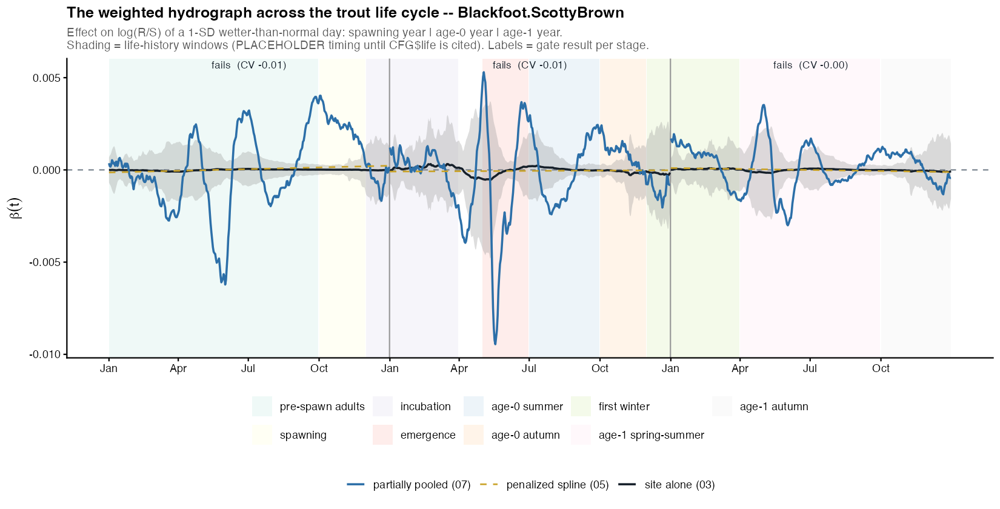
Life-history windows are shaded with provisional dates until they are replaced with cited values. The stage curves are fitted one stage at a time here; where flow carries over from one year to the next (carry-over in the table above), neighbouring stages partly echo each other. The pooled model on the Among sites page fits the stages jointly.
Each curve above is a weighted sum of this river’s flow modes. The
weights are averaged over models: every subset of modes
is fitted, models within 4 AICc of the best are kept, and each mode’s
coefficient is averaged with Akaike weights, counting as zero in models
that leave it out. A mode the data do not support is shrunk toward zero
rather than kept at full size. w is a mode’s importance:
the summed weight of the models that contain it.
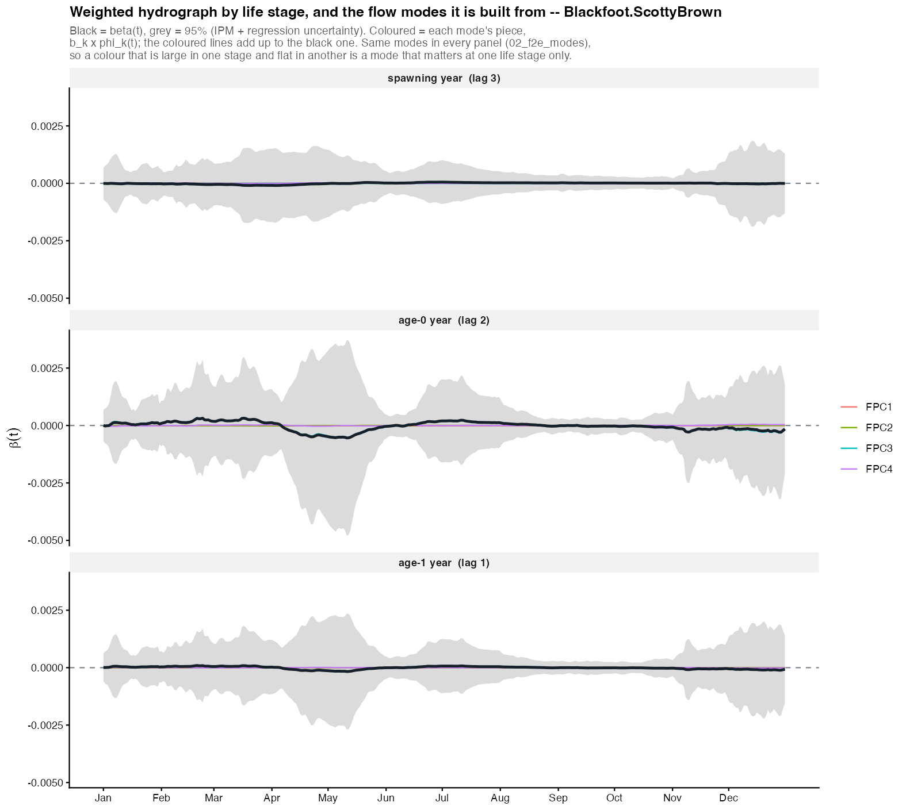
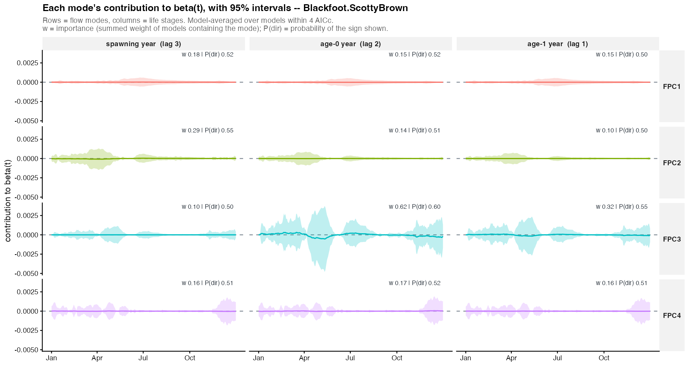
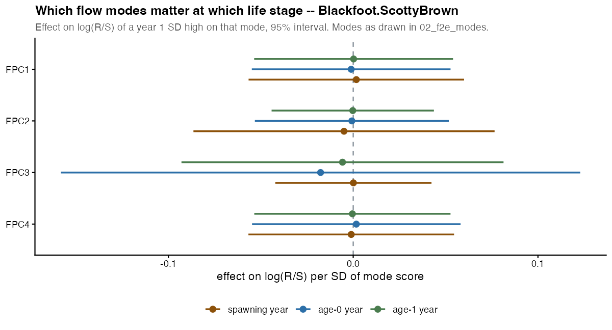
| stage | mode | % of flow variation | effect per SD | lo 95 | hi 95 | importance w | P(direction) |
|---|---|---|---|---|---|---|---|
| age-0 year | FPC3 | 8.29 | -0.02 | -0.16 | 0.12 | 0.62 | 0.6 |
| stage | rank | modes | AICc | delta | weight |
|---|---|---|---|---|---|
| spawning year | 1 | (stock only) | -61.44 | 0.00 | 0.37 |
| spawning year | 2 | FPC2 | -60.03 | 1.41 | 0.19 |
| spawning year | 3 | FPC1 | -59.25 | 2.19 | 0.13 |
| spawning year | 4 | FPC4 | -58.95 | 2.49 | 0.11 |
| spawning year | 5 | FPC3 | -58.82 | 2.62 | 0.10 |
| age-0 year | 1 | FPC3 | -62.59 | 0.00 | 0.34 |
| age-0 year | 2 | (stock only) | -61.44 | 1.15 | 0.19 |
| age-0 year | 3 | FPC3 + FPC4 | -60.11 | 2.49 | 0.10 |
| age-0 year | 4 | FPC1 + FPC3 | -59.94 | 2.65 | 0.09 |
| age-0 year | 5 | FPC2 + FPC3 | -59.85 | 2.74 | 0.09 |
| age-1 year | 1 | (stock only) | -61.44 | 0.00 | 0.38 |
| age-1 year | 2 | FPC3 | -60.26 | 1.18 | 0.21 |
| age-1 year | 3 | FPC2 | -58.84 | 2.60 | 0.10 |
| age-1 year | 4 | FPC4 | -58.83 | 2.61 | 0.10 |
| age-1 year | 5 | FPC1 | -58.82 | 2.62 | 0.10 |
| stage | lag | form | n_years | r2_insample | r2_blocked | r2_blocked_stock | cv_gain | p_value | p_adj | p_floor | passes | cor_fpc_penalized |
|---|---|---|---|---|---|---|---|---|---|---|---|---|
| spawning year | 3 | beta:fpc | 32 | 0.911 | 0.875 | 0.888 | -0.013 | 0.844 | 1 | 0.047 | FALSE | 0.439 |
| spawning year | 3 | beta:penalized | 32 | 0.909 | 0.861 | 0.888 | -0.026 | 0.797 | 1 | 0.047 | FALSE | 0.439 |
| spawning year | 3 | seasonal | 32 | 0.913 | 0.843 | 0.888 | -0.045 | 0.672 | 1 | 0.047 | FALSE | 0.439 |
| age-0 year | 2 | beta:fpc | 32 | 0.918 | 0.882 | 0.888 | -0.006 | 0.438 | 1 | 0.047 | FALSE | -0.321 |
| age-0 year | 2 | beta:penalized | 32 | 0.907 | 0.877 | 0.888 | -0.010 | 0.906 | 1 | 0.047 | FALSE | -0.321 |
| age-0 year | 2 | seasonal | 32 | 0.918 | 0.875 | 0.888 | -0.013 | 0.484 | 1 | 0.047 | FALSE | -0.321 |
| age-1 year | 1 | beta:fpc | 32 | 0.910 | 0.883 | 0.888 | -0.004 | 0.906 | 1 | 0.047 | FALSE | 0.404 |
| age-1 year | 1 | beta:penalized | 32 | 0.906 | 0.879 | 0.888 | -0.009 | 0.938 | 1 | 0.047 | FALSE | 0.404 |
| age-1 year | 1 | seasonal | 32 | 0.910 | 0.866 | 0.888 | -0.021 | 0.797 | 1 | 0.047 | FALSE | 0.404 |
cv_gain is the blocked cross-validated R-squared of the
flow model minus that of spawner abundance alone: what flow adds, out of
sample, beyond density dependence. Folds hold out runs of 3 consecutive
years, and for the flow-mode form the model averaging is redone inside
every fold. p_value comes from rotating the response
against the flow record (and the time-reversed record), which keeps each
series’ own autocorrelation; p_adj is Holm-adjusted across
the three stages, and p_floor is the smallest value it
could reach with this many years. cor_fpc_penalized is the
agreement in shape between the flow-mode curve and a penalized spline
fitted to the same data: where it is low, the daily shape is coming from
the estimator.
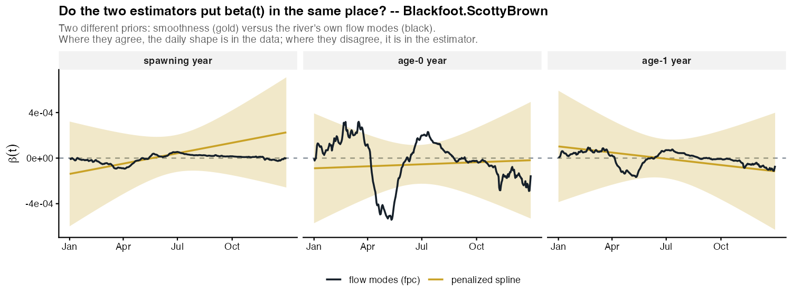
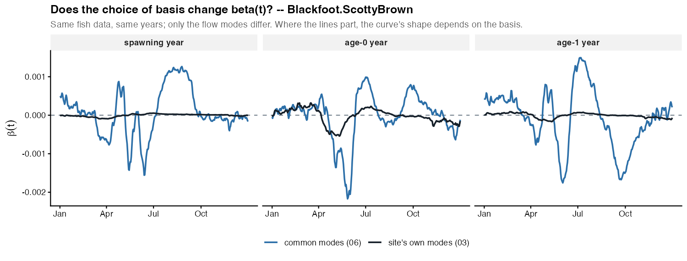
The pre-registered, low-resolution version of the same question: four calendar seasons in each of the three hydrograph years, nothing tuned.
| stage | season | effect | lo 95 | hi 95 | P(direction) |
|---|---|---|---|---|---|
| spawning year | winter | 0.00 | -0.21 | 0.21 | 0.51 |
| spawning year | runoff | -0.02 | -0.31 | 0.27 | 0.55 |
| spawning year | summer | 0.03 | -0.25 | 0.32 | 0.59 |
| spawning year | autumn | 0.00 | -0.24 | 0.23 | 0.52 |
| age-0 year | winter | 0.02 | -0.21 | 0.24 | 0.56 |
| age-0 year | runoff | -0.05 | -0.37 | 0.27 | 0.62 |
| age-0 year | summer | 0.03 | -0.25 | 0.32 | 0.59 |
| age-0 year | autumn | -0.01 | -0.25 | 0.23 | 0.52 |
| age-1 year | winter | 0.02 | -0.20 | 0.24 | 0.57 |
| age-1 year | runoff | -0.02 | -0.31 | 0.26 | 0.56 |
| age-1 year | summer | 0.02 | -0.26 | 0.30 | 0.55 |
| age-1 year | autumn | -0.01 | -0.25 | 0.23 | 0.52 |
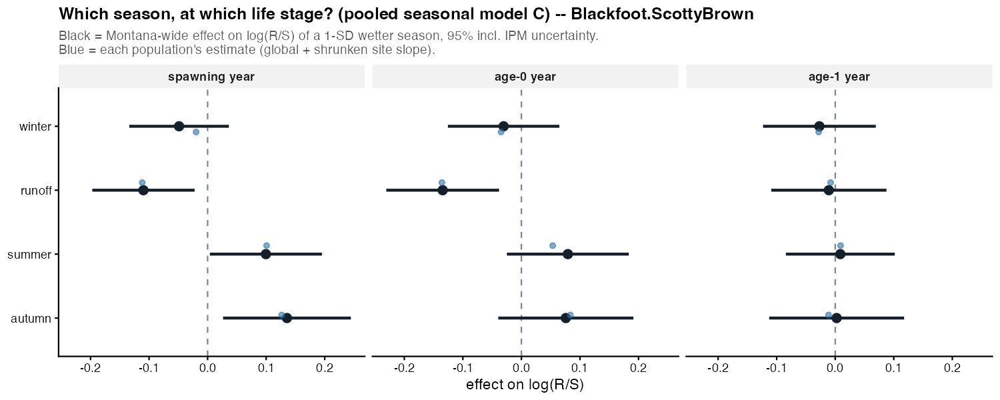
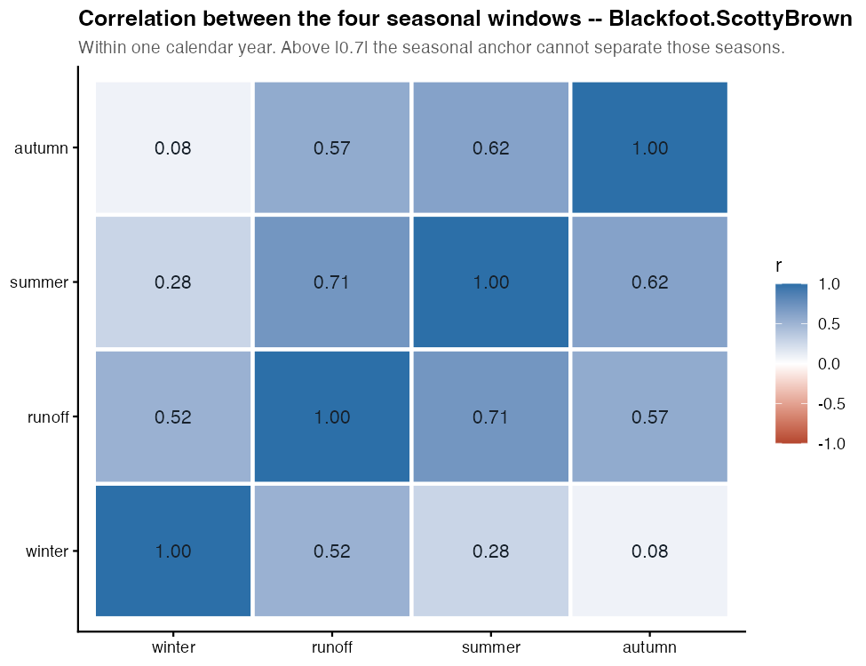
The same life-cycle curve when this population borrows strength from the others: the Montana-wide curve (grey) plus this river’s own departure from it, shrunk toward zero by as much as its data are uncertain.
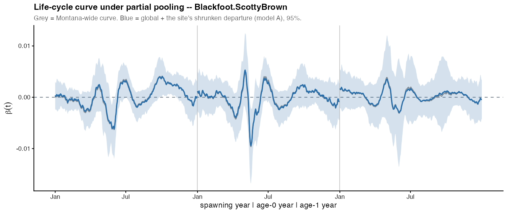
The survival process deviate (what the density-dependent null model leaves unexplained) against the hydrograph of the same year (lag 0) or the year before (lag 1); lag 1 fitted best here. Gate: not validated (CV gain -0.21, adjusted p 1.000).
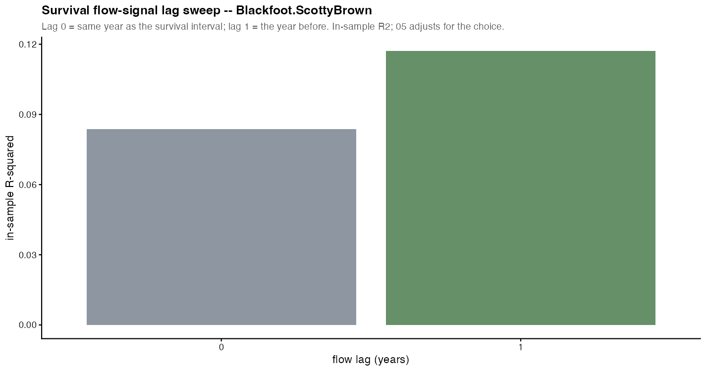
| figure | file |
|---|---|
| 01_f1a | 01_f1a__Blackfoot_ScottyBrown.png |
| 01_f1b | 01_f1b__Blackfoot_ScottyBrown.png |
| 01_f1c | 01_f1c__Blackfoot_ScottyBrown.png |
| 02_f2a | 02_f2a__Blackfoot_ScottyBrown.png |
| 02_f2c | 02_f2c__Blackfoot_ScottyBrown.png |
| 02_f2d | 02_f2d__Blackfoot_ScottyBrown.png |
| 02_f2e_modes | 02_f2e_modes__Blackfoot_ScottyBrown.png |
| 02_f2f_scores | 02_f2f_scores__Blackfoot_ScottyBrown.png |
| 03_components | 03_components__Blackfoot_ScottyBrown.png |
| 03_component_grid | 03_component_grid__Blackfoot_ScottyBrown.png |
| 03_mode_effects | 03_mode_effects__Blackfoot_ScottyBrown.png |
| 04_f4a | 04_f4a__Blackfoot_ScottyBrown.png |
| 04_f4b | 04_f4b__Blackfoot_ScottyBrown.png |
| 05_estimator_agreement | 05_estimator_agreement__Blackfoot_ScottyBrown.png |
| 06_basis_check | 06_basis_check__Blackfoot_ScottyBrown.png |
| 07_lifecycle_sites | 07_lifecycle_sites__Blackfoot_ScottyBrown.png |
| 07_seasonal | 07_seasonal__Blackfoot_ScottyBrown.png |
| 08_lifecycle | 08_lifecycle__Blackfoot_ScottyBrown.png |